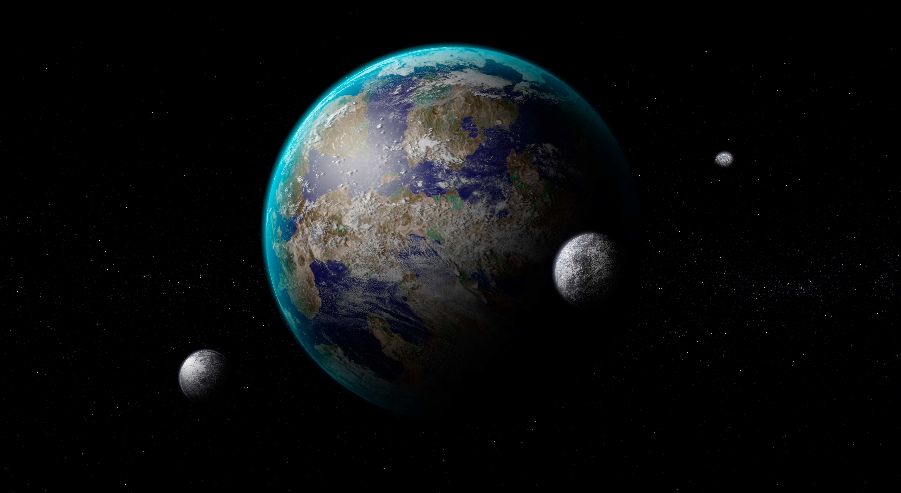

hypothetical habitable exoplanet with
three natural satellites
Overview
Earth analogues are rocky exoplanets close to Earth's size that orbit within their star's habitable zone, the range of distances where temperatures could allow liquid water to exist on a planet's surface. The term describes a planet's size and orbit only, since confirming an atmosphere, water, or any other Earth-like property is far beyond current technology for most known examples.
The habitable zone
A star's habitable zone is defined as the distance range where a rocky planet with a suitable atmosphere could sustain liquid water on its surface; too close and water would boil away, too far and it would freeze. The zone's exact width and position depend heavily on the star's temperature and brightness, so an Earth-sized planet can sit in the habitable zone at very different distances depending on what kind of star it orbits.
Formation
Earth analogues are thought to form the same way Earth did, through the gradual accretion of planetesimals in the inner, rockier region of a protoplanetary disk, inside the frost line where ices cannot remain solid. Whether such a planet ends up with enough water for oceans likely depends on how much icy material was delivered from farther out in its system, whether by migrating planetesimals, comets, or other means.
Notable examples
Proxima Centauri b, orbiting the nearest star to the Sun, is the closest known potentially rocky exoplanet in a habitable zone, though its red dwarf star's frequent flares raise questions about whether an atmosphere could survive there. The TRAPPIST-1 system, discovered in 2017, hosts seven roughly Earth-sized planets, four of which orbit within or near the habitable zone, making it one of the most studied systems for potential habitability. Kepler-186 f, announced in 2014, was the first Earth-sized planet confirmed in the habitable zone of another star.
Detection challenges
Earth-sized planets are among the hardest to detect, since they produce a very small transit dip or a very subtle radial velocity wobble compared to larger planets. Habitable zone Earth analogues are harder still, because that zone typically lies at a wider, slower orbit than the close-in planets most easily found by short-duration surveys, requiring years of continuous observation to confirm.
Studying atmospheres
Confirming whether an Earth analogue actually has an atmosphere, let alone water or signs of life, requires transmission spectroscopy during a transit, a technique made far more sensitive by the James Webb Space Telescope but still most effective for planets orbiting small, dim red dwarf stars where the atmospheric signal is comparatively easier to detect. Future telescopes are being designed specifically to attempt this kind of study for Sun-like stars as well.